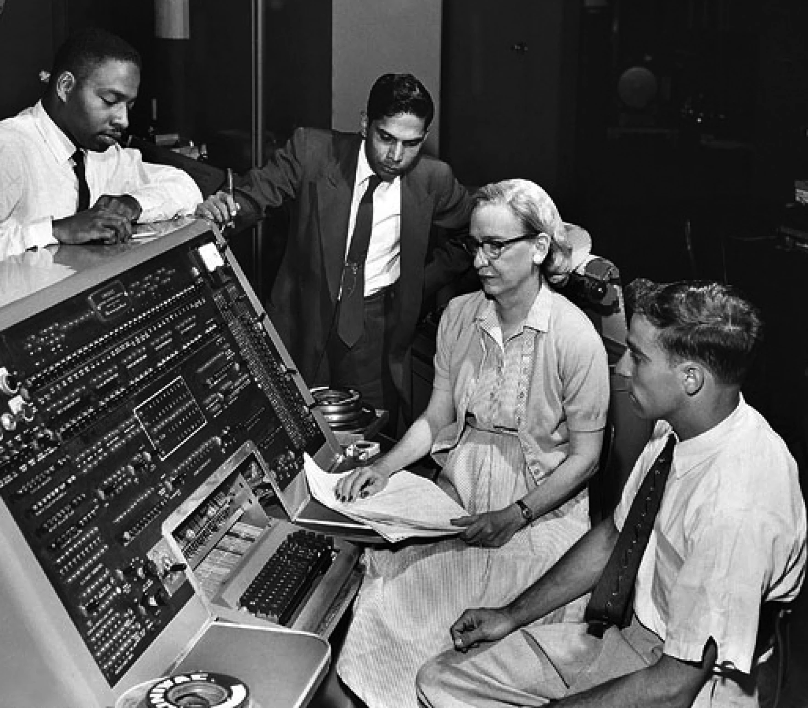

C.A.L.P.
Claudio Vaucheret
2023-08-15 mar 00:00
Created: 2024-08-15 jue 12:11
Introducción
Razones para estudiar Conceptos de Lenguajes de Programación
- Incrementa la habilidad para expresar ideas
- Mejora la capacidad de elegir el lenguaje apropiado
- Incrementa la capacidad de aprender nuevos lenguajes
- Mejora el entendimiento del funcionamiento interno del lenguaje (implementación)
Dominios de Programación
- Aplicaciones Científicas
- Gran número de computación de punto flotante
- Fortran
- Aplicaciones Empresariales
- Producción de Reportes, uso de números decimales y caracteres
- Cobol
- Inteligencia Artificial
- Manipulación simbólica (en lugar de números)
- LISP
- Sistemas de Programación
- Necesidad de eficiencia (debido al uso continuo)
- C
- Software para la WEB
- Colección ecléctica de lenguajes: markup (e.g. HTML5), scripting (e.g. PHP), de propósito general (e.g. Java)
Criterios de Evaluación de Lenguajes
- Legibilidad: la facilidad con la cual los programas pueden ser leídos y entendidos.
- Escribilidad: la facilidad con la cual un lenguaje puede ser usado para crear programas
- Confiabilidad: El grado en que el lenguaje funciona de acuerdo a sus especificaciones.
- Costo: de uso, compilación, mantenimiento etc.
Legibilidad
- Simplicidad
- Un conjunto manejable de características y construcciones
- Poca multiplicidad de características (medios de realizar la misma operación)
- Minima sobrecarga de operadores
- Ortogonalidad
- Un conjunto relativamente pequeño de construcciones primitivas que puedan ser combinadas en un numero pequeño de modos
- Toda posible combinación sea legal.
- Sentencas de Control
- La presencia de bien conocidas estructuras de control
- Tipos de Datos y Estructuras
- La presencia de facilidades adecuadas para definir estructuras de datos
- Consideraciones sintácticas
- Composición flexible de identificadores
- Palabras especiales y métodos para formar sentencias compuestas
- Construcciones autodescriptivas, palabras reservadas significativas
Escribilidad
- Simplicidad y ortogonalidad
- Pocas constucciones, numero pequeño de primitivas y pocas reglas para combinarlas.
- Soporte para la abstracción
- La habilidad para definir y usar estructuras complejas u operaciones de modo que los detalles puedan ser ignorados
- Expresibilidad
- Un conjunto conveniente de modos de especificar operaciones
- Ejemplo: La inclusión de la sentencia FOR en muchos lenguajes modernos
Confiabilidad
- Chequeo de Tipos
- verificación de errores de tipos
- Manejo de Excepciones
- interceptar errores en ejecución y tomar medidas correctivas
- Aliasing
- Presencia de dos o mas distintas referencias para el mismo lugar de memoria
- Legibilidad y Escribilidad
- Un lenguage que no soporta modos "naturales" de expresar un algoritmo necesariamente usará aproximaciones "no naturales" y asi reducirá la confiabilidad
Costo
- Costo de …
- Entrenar programadores para usar un lenguaje
- Escribir programas (cercano a aplicaciones particulares)
- Compilar programas
- Ejecutar programas
- Implementar Lenguajes (disponibilidad de compiladores libres)
- Confiabilidad: Confiabilidad pobre lleva a altos costos
- Mantener programas
Otros
- Portabildad
- La facilidad con que los programas puedan moverse de una implementación a otra
- Generalidad
- Su aplicabilidad a un amplio rango de aplicaciones.
- Bien definido
- La completitud y precisión de la definición oficial del lenguaje
Influencias en el diseño de los lenguajes
- Arquitectura de Computadoras
- Lenguajes son desarrollados alrededor de la arquitectura de computadora prevaleciente, conocida como arquitectura de von Neumann
- Metodologías de Programación
- Nuevas metodologías de desarrollo de software (e.g. desarrollo de software orientado a objetos) llevan a nuevos paradigmas y por extensión a nuevos lenguajes de programación
Influencia de la Arquitectura de Computadoras
- Arquitectura de Computadora bien conocida: Von Neumann
- Lenguajes Imperativos mas dominantes debido a la arquitectura
dominante
- Datos y Programas almacenados en memoria
- Memoria Separada de la CPU
- Instrucciones y Datos son conducidos desde la Memoria a la CPU
- Bases para los lenguajes imperativos
- Variables modelan celdas de memoria
- La iteración es eficiente
Arquitectura de Von Neumann
Influencia de las Metodogías de Programación
- Décadas de los 50 y 60: Simples aplicaciones; preocupación principal la eficiencia
- Finales de los 60: Eficiencia de programación toma importancia:
legibilidad, mejores estructuras de control
- Programación Estructurada
- Diseño top-down y refinamiento step-wise
- Finales de los 70: De Orientación a Procesos a Orientación a Datos.
- Abstracción de Datos
- Mediados de los 80: Programación orientada a Objetos
- Abstracción de Datos + Herencia + Polimorfismo
Categoría de Lenguajes
- Imperativa
- Variables, sentencias de asignación e iteración
- Ejemplos: C, Pascal
- Funcional
- Principal medio de computación es aplicar funciones a parámetros
- Ejemplos: LISP, Scheme
- Lógica
- Basado en Reglas
- Ejemplo: Prolog
- Orientado a Objetos
- abstracción de datos, herencia, ligadura tardía
- Ejemplos: Java, C++
- Marcado
- No programación per se, pero usados para especificar la información mostrada en documentos web
- Ejemplos: XHTML, XML
Compromisos en el diseño de Lenguajes
- Confiabilidad vs. Costo de ejecución
- Ejemplo: Java exige que todas las referencias a elementos de los arreglos sean chequeadas si la indexación es correcta, pero esto incrementa el costo de ejecución
- Legibilidad vs. Escribilidad
- Ejemplo: APL provee muchos operadores poderosos (y un gran numero de nuevos simbolos) permitiendo que complejas operaciones sean escritas en un programa compacto pero con el costo de pobre legibilidad
- Flexibilidad vs. Confiabilidad
- Ejemplo: Los punteros de C++ son poderosos y muy flexibles pero de un uso poco confiable.
Métodos de Implementación
- Compilación
- Los programas son traducidos al lenguaje máquina
- Interpretación Pura
- Los programas son interpretados por otro programa llamado intérprete
- Sistemas de implementación híbridos
- Un compromiso entre compilación y interpretación pura
Capas de Implementación de Lenguajes
Compilación
- Traduce programas de alto nivel (lenguaje fuente) en codigo máquina
- Traducción lenta, ejecución rápida
- El proceso de compilación tiene varias faces:
- análisis lexico: convierte caracteres del programa fuente en unidades léxicas
- análisis sintáctico: Transforma unidades léxicas en árboles sintácticos parse trees
- análisis semántico: Genera código intermedio
- generación de código: Codigo máquina es generado
El proceso de compilación

Terminología Adicional de Compilación
- Módulo de carga (imagen ejecutable) : El código del usuario y del sistema juntos
- linking and loading Enlazado y Carga: El proceso de recolectar los programas del sistema y enlazarlo al programa del usuario
Ejecución del Código Máquina
- ciclo de traer y ejecutar (sobre una arquitectura Von Neumann)
repeat por siempre
traer la instrucción apuntada por el contador
incrementar el contador
decodificar la instrucción
ejecutar la instrucción
end repeat
Cuello de botella de Von Neumann
- La velocidad de conección entre la memoria de la computadora y su procesador determina la velocidad de la computadora
- Las intrucciones del programa son ejecutadas mucho mas rápido que la velocidad de conección; por lo tanto ésta se vuelve el cuello de botella
- Es conocido que cuello de botella de la arquitectura de Von Neumann es el principal factor en la velocidad de las computadoras
Interpretación Pura
- Sin traducción
- Facil implementación de programas. Errores de tiempo de ejecución pueden ser facilmente reconocidos
- Ejecución mas lenta (10 a 100 veces mas lenta que programas compilados)
- Frecuentemente requiere mas espacio
- Se volvio infrecuente en lenguajes de alto nivel
- Han retornado con lenguajes de sripting para la Web (e.g. JavaScript)
Proceso de Interpretación Pura
Sistemas de Implementación Híbrida
- Un compromiso entre compilador y intérprete puro
- El programa en lenguaje de alto nivel es traducido a un lenguaje intermedio que permite facil interpretación
- Mucho mas rápido que interpretación pura
- Ejemplos
- Programas en Perl son parcialmente compilados para detectar errores antes de la interpretación
- Implementaciones iniciales de Java fueron híbridas, la forma intermedia byte code, proveyó portabilidad a toda máquina que tenía un interprete de byte code y un sistema de run time (juntos son llamados la máquina virtual de java)
Proceso de Implementación Híbrida
Sistemas de Implementación Just in Time
- Inicialmente Los programas se traducen a un lenguaje intermedio
- Luego el lenguaje intermedio se compila a código máquina
- La versión en máquina se conserva para llamadas subsecuentes
- Sistemas JIT son ampliamente usados para programas Java
- Lenguajes .NET son implementados con sistemas JIT
Preprocesadores
- Macros de preprocesamiento (instrucciones) son comunmente usadas para especificar que código de otros archivos sean incluidos
- Un preprocesador procesa un programa inmediatamente antes de que el programa se compile para expandir las macros incluídas
- Un ejemplo conocido: El preprocesador de C
- expands #include, #define, y macros similares
Entornos de Programación
- Una colección de herramientas usadas en el desarrollo de software
- UNIX
- un tradicional sistema operativo y colección de herramientas
- hoy en dia frecuentemente usado a través de un GUI que corren sobre UNIX
- Borland JBuilder
- Un entorno de programación integrado para Java
- Microsoft Visual Studio .NET
- Un complejo entorno visual de desarrollo
- Usado para programar en C#, Visual Basic .NET, jscript, J# o C++
Evolución de los Lenguajes de Programación
Lenguajes de Programación
{kind=link}
Lenguajes de Programación
{kind=link}
Evolución de los primeros lenguajes
Konrad Zuse's language de la computadora Z4.
Zuse's Plankalkül
- Desarrollado en 1945
- Nunca implementado
- Su descripción fue publicada en 1972.
- Tipos de datos: bit, Integer and float tipos compuestos.
- arreglos y registros
| A + 1 => A
V | 4 5
S | 1.n 1.n
Codigo Máquina: pseudocodigos ¿?
Escribir en lenguaje máquina
- poco legibles y modificables
- sin indices ni punto flotante
- direccionamiento absoluto
Shorte Code Mauchly (1949)
- computadora BINAC
- Expresiones eran codificadas de izquierda a derecha
- Ejemplos de operaciones:
01 - 06 abs value 1n (n+2)nd power
02 ) 07 + 2n (n+2)nd root
03 = 08 pause 4n if <= n
04 / 09 ( 58 print and tab
La sentencia X0 = SQRT(ABS(Y0)) podria ser codificada como:
00 X0 03 20 06 Y0
Speedcoding
- Desarrollado por John Backus en 1954 para IBM 701
- Pseudo operaciones para funciones aritméticas y matemáticas
- bifurcación condicional e incondicional
- registros autoincrementales para acceso a arreglos
- 4.2 millisegundos la instruccion de suma y 700 palabras para el programa
- 2 semanas de programación en pocas horas!!!
Otros sistemas relacionados
- Sistema de "compilación" UNIVAC
- Desarrollado por el equipo de Brace Hopper
- Pseudocodigo expandido en código máquina (macros)
- David J Wheeler (Universidad de Cambridge) (1950)
- Desarrollo un método de usar bloques de direccionamiento reubicables
- Wilkes (1951-1957) desarrollo lenguaje assembler con estas ideas
IBM 704 y Fortran

Fortan
- Fortran 0: 1954 - no implementado
- Fortran 1 1957
- Diseñado para la nueva IBM 704, que tenía registros y aritmética de punto flotante
- Entorno de Desarrollo
- Las Computadoras eran pequeñas y confiables
- Las aplicaciones eran científicas
- Sin metodología ni herramientas de programación
- Importancia en eficiencia
Proceso de Diseño
- El impacto del entorno en el diseño de Fortran
- Sin necesidad de almacenamiento dinámico
- Necesidad de un buen manejo de arreglos y ciclos
- Sin manejo de cadenas, aritmética decimal o herramientas de entrada/salida (de uso comercial)
Fortran I
- Primera versión implementada de Fortrand
- Nombres hasta 6 caracteres
- Ciclos iterativos con post condición (DO)
- I/O formateada
- subprogramas definidos por el usuario
- Sentencias condicionales de tres modos (IF aritmético)
- sentencias sin tipo de datos
Fortran I
- Primera versión implementada
- Sin compilación separada
- Compilador distribuido en Abril de 1957,
- Programas de mas de 400 lineas raramente compilaban correctamente, principalmente debido a la pobre confiabilidad de la IBM 704
- La Codificación era verdaderamente rápida
- Rapidamente se volvió ampliamente usado
Fortran II
- Distribuido en 1958
- Compilación independiente
- Se corrigieron muchos errores
Fortran IV
- Desarrollado durante 1960-1962
- Declaración explicita de tipos
- Sentencia de selección lógica
- Nombres de programas podian ser pasados como parámetros
- ANSI standard en 1966
Fortran 77
- Se volvió el nuevo estandard en 1978
- Manejo de cadenas de caracteres
- sentencia de control de ciclos lógico
- sentencia IF-THEN-ELSE
Fortran 90
- Con los mas significativos cámbios desde el Fortran 77
- Módulos
- Arreglos dinámicos
- Punteros
- Recursión
- sentencia CASE
- chequeo de tipos en los parametros
Evaluación de Fortran
- Compiladores altamente optimizados (todas las versiones anteriores a 90)
- Los tipos y almacenamiento de todas las variables eran fijas antes del tiempo de ejecución.
- Dramaticamente cambió para siempre el modo en que las computadoras fueron usadas
- Caracterizados como la lingua franca del mundo de la computación
Programación Funcional: LISP
John McCarthy
LISP
- LISt Processing Language
- Diseñado en el MIT por McCarthy
- Investigación en AI necesitaba un lenguaje
- Procesamiento de datos en Listas (en lugar de arreglos)
- Computación simbólica (en lugar de numérica)
- Solo dos tipos de datos: átomos y listas
- Basado en el Lambda calculus
Representación de Listas LISP

Evaluación de LISP
- Pionero en programación funcional
- Sin necesidad de variables o asignación
- Control via recursión y expresiones condicionales
- Aún un lenguaje dominante para IA
- COMMON LISP y Scheme son dialectos contemporaneos de LISP
- ML, Miranda, Haskell son lenguajes relacionados
Scheme
- Desarrollado en el MIT a mediados de los 70
- Pequeño
- Extensivo uso de alcance estático
- Funciones como entidades de primera clase
- Sintaxis simple, ideal para aplicaciones educativas
COMMON LISP
- Un esfuerzo por combinar características de varios dialectos de LISP en un solo lenguaje
- Grande y Complejo
Primera sofisticación: ALGOL 60
Algol 60
- Entorno de Desarrollo
- FORTRAN había arribado para las IBM 70x
- Muchos lenguajes se habían desarrollado para máquinas específicas
- Ningún lenguaje era portable; todos eran dependiente de las máquinas
- No existía ningún lenguaje universal para comunicar algoritmos
- ALGOL 60 fue el resultado del esfuerzo de designar un lenguaje universal
Primitivo proceso de diseño
- Encuentro de ACM y GAMM para cuatro dias de diseño (27 de Mayo al 1 de Junio de 1958)
- Metas del Lenguaje
- Cercano a la notación matemática
- Bueno para describir algoritmos
- Traducible a lenguaje máquina
ALGOL 58
- El concepto de tipos fue formalizado
- Los nombre podrían tener cualquier longitud
- Los arreglos podrían tener cualquier número de subíndices
- Los parámetros fueron separados por modo (Entrada y Salida)
- Subíndices fueron colocados entre corchetes
- Sentencias compuestas (begin … end)
- Punto y coma como separador de sentencias
- Operador de asignación fue :=
- if tenía una cláusula else-if
- Sin E/S - "podría hacerlo dependiente de la máquina"
Implementación de ALGOL 58
- Sin intención de ser implementado, sin embargo variaciones de él si lo fueron (MAD, JOVIAL)
- Aunque IBM fue inicialmente entusiasta, todo soporte fue quitado a mediados de 1959
ALGOL 60
- Se modificó ALGOL 58 en una reunión de 6 dias en Paris
- Nuevas Características
- Estructura de bloques (alcance local)
- Dos métodos de pasaje de parámetros
- Recursión de subprogramas
- arreglos dinámicos (basados en pilas)
- Todavía sin E/S ni manejo de cadenas de caracteres
Evaluación de ALGOL 60
- Exitoso
- Fue el modo estándar de publicar algoritmos por los siguientes 20 años
- Todo subsecuente lenguaje imperativo fue basado en él
- Primer lenguaje independiente de la máquina
- Primer lenguaje cuya sintaxis fue formalmente definida (BNF)
Evaluación de ALGOL 60
- Fracaso
- Nunca fue ampliamente usado, especialmente en U.S.
- Razones:
- Falta de E/S y el conjunto de caracteres lo hacía no portable
- Demasiado flexible para implementar
- atrincheramiento de Fortran
- Falta de soporte de IBM
Aplicaciones Comerciales: COBOL
 Grace Hopper
COBOL Commercial Buisness Language
- Entorno de Desarrollo
- UNIVAC comenzó a usar FLOW-MATIC
- USAF comenzó a usar AIMACO
- IBM desarrolló COMTRAN
COBOL Historia
- Basado en FLOW-MATIC
- características de FLOW-MATIC:
- Nombres de mas de 12 caracteres, con guiones incluidos
- Nombres en Inglés para los operadores aritméticos
- Datos y códigos completamente separados
- Verbos eran las primeras palabras en toda sentencia
COBOL proceso de diseño
- Primera reunión de diseño (Pentagon) - Mayo de 1959
- Metas de Diseño
- Debe lucir como simple Ingles
- Facil de usar, aún si esto significara menor potencia
- Debe ampliar la base de los usuarios de computadoras
- No debe estar sesgado por los actuales problemas de compiladores.
- Los miembros del comité eran todos de los fabricantes de computadoras y divisiones del DoD
- Problemas de Diseño: expresiones aritméticas? Desacuerdo entre fabricantes
Evaluación de COBOL
- Contribuciones
- Primeras facilidades de Macros en un lenguaje de alto nivel
- Estructuras de datos jerárquicos (registros)
- Sentencias de selección anidadas
- Nombres largas (mas de 30 caracteres), con guiones
- División de Datos separadas
Influencia del Departamento de Defensa
- Primer lenguaje requerido por DoD
- Podría haber fallado sin Dod
- Aún es el lenguaje mas usado en aplicaciones comerciales
Comienzo de tiempo compartido: BASIC
BASIC
- Diseñado por Kemeny & Kurtz en Dartmouth
- Metas de diseño
- Facil de aprender y usar por estudiantes que no sean de ciencias
- Debe ser placentero y amigable
- Acceso Libre
- El tiempo del usuario es mas importatne que el tiempo de computación
- Dialecto popular actual: Visual BASIC
- Primer lenguaje ampliamente usado con tiempo compartido
Todo para Todos: PL/I
PL/I
- Diseñado por IBM y SHARE
- Situación de la computación en 1964 (desde el punto de vista de IBM)
- Computación científica
- Computadoras IBM 1620 y 7090
- FORTRAN
- grupo de usuarios SHARE
- Computación de empresas
- Computadoras IBM 1401, 7080
- COBOL
- grupo de usuarios GUIDE
- Computación científica
Antecedentes PL/I
- En 1965
- usuarios científicos comenzaron a necesitar Entrada/Salida mas elaborada, como tenía COBOL; y usuarios empresariales comenzaron a necesitar aritmética de punto flotante y arreglos
- Muchas empresas empezaron a necesitar dos clases de computadoras, lenguajes y personal de soporte. Demasiado Costo.
- La solución mas obvia:
- Construir una nueva computadora para ambas clases de aplicaciones
- Diseñar un nuevo lenguaje para ambas clases de aplicaciones.
Proceso de diseño
- Diseñado en 5 meses por un comité bipartito:
- tres miembros de IBM y tres miembros de SHARE
- Concepto inicial
- Una extensión de Fortran IV
- Inicialmente llamado NPL (Nuevo Lenguaje de Programación)
- El nombre cambió a PL/I en 1965
Evaluación de PL/I
- contribuciones de PL/I
- Primer nivel de concurrencia
- Primer manejador de excepciones
- llave de selección de recursión
- Primer tipo de dato puntero
- Muchas características fueron pobremente diseñadas
- Demasiado grande y demasiado complejo
Lenguajes Dinámicos
APL y SNOBOL
- Caracterizados por tipos dinámicos y administración dinámica de memoria
- Las Variables son sin tipos
- Una variable adquiere un tipo cuando se le asigna un valor
- El almacenamiento se le asigna a una variable cuando se le asigna un valor
APL: (A Programming Language)
- Diseñado como un lenguaje de descripción de hardware en IBM por Ken
Iverson alrededor de 1960
- Altamente expresivo (muchos operadores, tambien para arreglos de varias dimensiones)
- Programas muy difíciles de leer
- Aún en uso con mínimos cambios
SNOBOL
- Diseñado como un lenguaje de manipulación de cadena de caracteres en los laboratorios BELL por Farber, Griswold y Polensky
- Operaciones poderosas para comparar patrones de cadenas de caracteres
- Mas lento que los lenguajes alternativos (y por lo tanto no usado para escribir editores)
- Aún usado para tareas de procesamiento de texto
El comienzo de la Abstracción de Datos
Simula 67
- Diseñado originalmente para sistemas de simulación en Noruega por Nygaard y Dahl
- Basado en Algol 60 y Simla I
- Principales contribuciones
- Co-rutinas, una clase de subprogramas
- Implementado en una estructura llamada class
- Las Classes son la base para la abstracción de datos
- Las Classes son las estructuras tanto para los datos locales y la funcionalidad
Diseño Ortogonal
ALGOL 68
- Continúa el desarrollo de ALGOL 60 pero no es un superconjunto de ese lenguaje
- Fuente de muchas nuevas ideas (aún cuando el lenguaje mismo nunca fue ampliamente usado)
- El diseño es basado en el concepto de ortogonalidad
- Pocos conceptos principales, con pocos mecanismos de combinación
Evaluación de ALGOL 68
- Contribuciones
- Estructuras de datos definidas por el usuario
- Tipos Referencias
- Arreglos dinámicos
- Comentarios
- Menor uso que ALGOL 60
- Tuvo gran influencia en los lenguajes subsecuentes, especialmente Pascal, C y Ada
Principales Descendientes de ALGOL
- El lenguaje ALGOL impactó en todos los lenguajes imperativos
- Pascal
- C
- Modula/Modula 2
- Ada
- Oberon
- C++/Java
- Perl
- …
PASCAL - 1971
- Desarrollado por Wirth (un miembro del comité de Algol 68)
- Diseñado para enseñar programación estructurada
- Pequeño, simple, nada realmente nuevo
- Gran impacto en la enseñanza de la programación
- Desde mediados de los 70 hasta fines de los 90, fue el lenguaje mas ampliamente usado para enseñar programación.
C - 1971
- Diseñado para programar sistemas (en los laboratorios DELL por Dennis Richie)
- Evolución de BCLP, B, pero también de ALGOL 68
- Poderoso conjunto de operadores, pero con débil chequeo de tipos.
- Inicialmente difundido a través de UNIX
- Muchas areas de aplicación
PERL
- Relacionado a ALGOL solo a través de C
- Un lenguaje de scripting
- un script es un archivo que contiene instrucciones para ser ejecutadas
- otros ejemplos: sh, awk, tcl/tk
- Desarrollado por Larry Wall
- Las variables de Perl estan estáticamente tipeadas y declaradas implicitamente.
- Tres espacios de nombres definidos denotados por el primer caracter del nombre de la variable
- Poderoso pero también peligroso
- Ampliamente usado como lenguaje de propósito general
Programación basado en la Lógica
Prolog
- Desarrollado por Comerauer y Roussel (Universidad de Aix-Marseille), con ayuda de Kowalski (Universidad de Edinburgh)
- Basado en lógica formal
- No es procedural
- Puede se resumido como un sistema de base de datos inteligente que usa procesos de inferir la verdad de consultas dadas
- Constraint Logic Programming
Historia del mas grande esfuerzo de diseño
Ada
- Enorme esfuerzo de Diseño, involucrando cientos de personas, mucho
dinero y alrededor de 8 años
- requerimientos de Strawman (Abril de 1975)
- requerimientos de Woodman (Agosto de 1975)
- requerimientos de Tinman (1976)
- equipamiento de Ironman (1977)
- requerimeintos de Stellman (1978)
- Nombrado Ada por Augusta Ada Byron conocida por ser la primera programadora
Evaluación de Ada
- Contribuciones
- Packages soporte para abstraccion de datos
- Manejo de excepciones - muy elaborado
- Unidad de programas genérico
- Concurrencia - a través del modelo de tareas
- Comentarios
- Diseño Competitivo
- Incluye todo lo conocido de ingeniería de software y diseño de lenguajes
- Los primeros compiladores fueron muy dificultosos: el primero realmente usable apareció recién 5 años despues que el diseño fue completado
Ada 95
- Ada 95 (comenzó en 1988)
- Soporte para OOP a través de derivación de tipos
- Mejores mecanismos de control para compartir datos
- Nuevas características de concurrencia
- Librerías mas flexibles
- Su popularidad sufrió debido a que el DoD no requirió mas su uso y también debido a la popularidad de C++
Programación Orientada a Objetos (OOP)
Smalltalk
- Desarrollado en Xerox PARC, inicialmente pro Alan Kay, luego por Adele Goldberg
- Primera implementación completa de un lenguaje orientado a objetos (abstracción de datos, herencia y ligadura dinámica de tipos)
- Pionero en el diseñode interface gráfica del usuario
- Promocionó OOP
Combinando OOP y Programación Imperativa: C++
- Desarrollado en Laboratorios BELL por Stroustrup en 1980
- Evolución desde C y SIMULA 67
- Facilidades para oop, tomadas paralelamente de SIMULA 67
- Provee manejo de excepciones
- Un lenguaje grande y complejo, porque soporta tanto programacion procedural como OO
- Rápidamente creció en popularidad
- estandar ANSI aprovado en Noviembre de 1997
Lenguajes OOP relacionados
- Eiffel (diseñado por Bertrand Meyer 1992)
- No directamente derivado de otros lenguajes
- mas pequeño y simple que C++, pero aún con la mayoría de su potencia
- Falta de popularidad con respecto a C++ debido a que los entusiastas de C++ eran ya programadores de C.
- Delphi (Borland)
- Pascal mas características para soportar OOP
- mas elegante y seguro que C++
Un lenguaje imperativo orientado a Objetos: Java
- Desarrollado en Sun a principios de los 90
- C y C++ no era satisfactorio para dispositivos electrónicos embebidos
- Basado en C++
- Simplificado significativamente (no incluye struct, union, enum, punteros aritméticos y la mitad de las asignaciones coercitivas de C++)
- soporta solo OOP
- Tiene referencias, pero no punteros
- Incluye soporte para applets y formas de concurrencias
Evaluación de Java
- Elimina características inseguras de C++
- Características de concurrencia
- Librerías para applets, GUI's, acceso a base de datos
- Portable: concepto de Máquina Virtual, compilador JIT
- Ampliamente usado para paginas de la WWW
- El uso en otras áreas se incrementó mas rápido que otros lenguajes
Lenguajes de Scripting para la WWW
Scripting
- JavaScript
- Una aventura en conjunto de Netscape y Sun Microsystem
- Usada en programación WEB (del lado del cliente) para crear documentos HTML dinámicos
- Relacionado a Java, solo a través de la sintaxis similar
- PHP
- PHP: Preprocesador Hipertexto
- Usado para programación WEB (del lado del servidor), produce codigo HTML como salida
- Python
- Un lenguaje orientado a objetos interpretado
- chequeo de tipos pero tipeado dinámicamente
- Soporta CGI y procesamiento de formularios